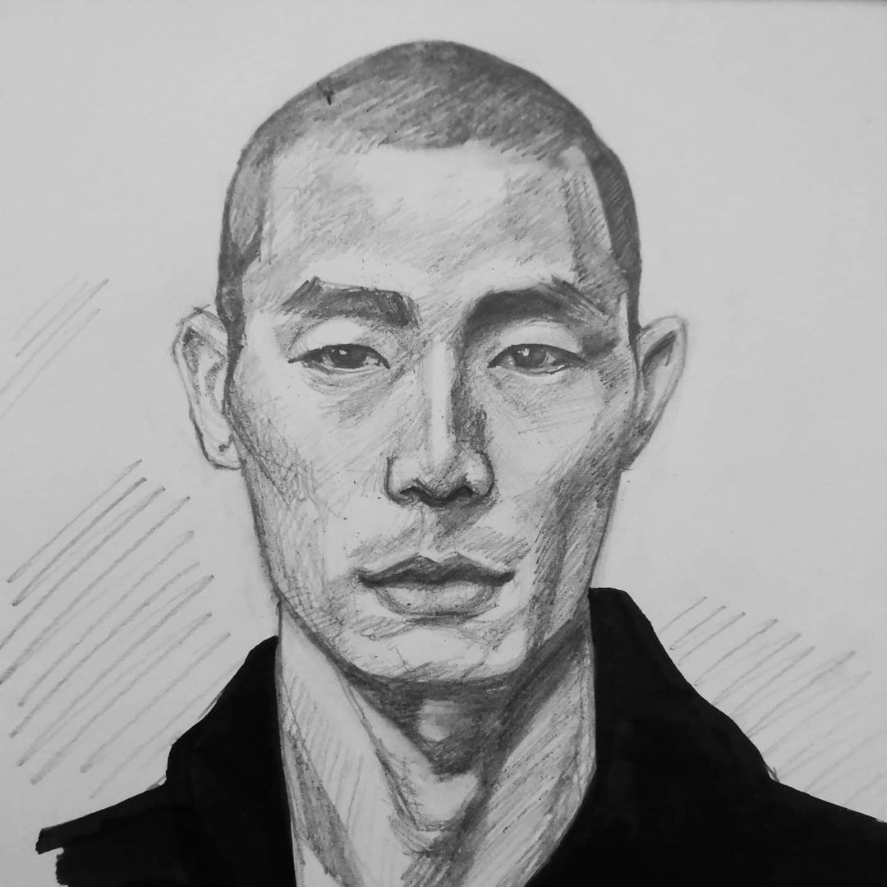
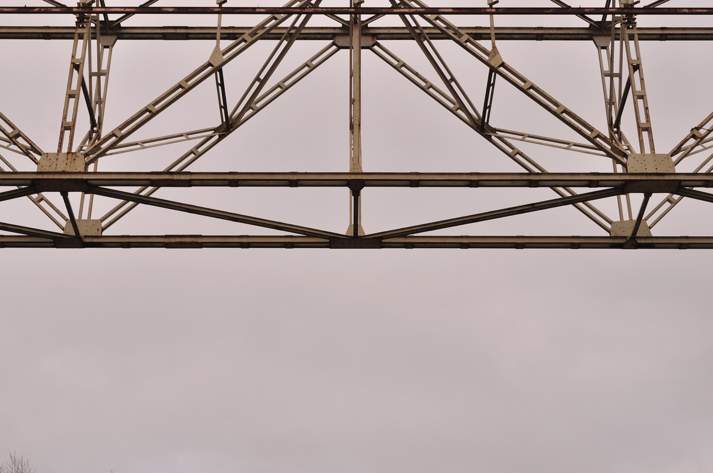

Ce regroupement de travaux a pour but de témoigner de ma polyvalence et de ma curiosité au travers de mes différentes productions qu’elles soient scolaires ou personnelles. N'hésitez pas à me contacter pour en discuter !
design graphique
cerblow // workshop typo
// Projet scolaire // En équipe, création d’une typographie lors d’un workshop sur le thème de la typographie musicale. Nous avons été inspiré par l’aspect cacophonique, chaotique, bruyant du son. Nous devions ensuite la mettre en situation sous forme d’un pangramme et sur des supports au choix.
chassés croisés // affiches
// Projet perso // Participation à un concours d’affiche organisé par le lycée Pontus-de-Tyard à Chalon-sur-Saône pour un évènement de danse classique et contemporaine. À l’origine c’était projet scolaire, je me suis laissée porter par l’exercice et j’ai proposé plusieurs mises en page diverses.
the fringe brothers // identité visuelle
// Projet perso // Le premier confinement dû à la pandémie de la COVID-19 m’a permis de m’essayer au logiciel Blender. Inspirée par cette expérimentation, j’ai créé un groupe fictif de rock alternatif ainsi que différents supports de communication pour la promotion de leur album et leur prochain concert.
yes typo // flyer
// Projet perso // À l’origine c’était un projet scolaire qui consistait en la création d’un flyer à 3 volets sur le thème
de notre choix, je me suis emparée du sujet pour proposer un document specimen de la typographie Fraunces.
illustration
portraits vectoriels // numérique
// Projet perso // Exercice personnel de vectorisation à partir de photographies trouvées sur Pinterest.
portraits // traditionnel
// Projet perso // Passionnée de dessin et ayant un attrait particulier pour le portrait, je me suis essayée à plusieurs techniques : graphite, fusain, marqueur, encre de chine, peinture acrylique... À partir de modèles trouvés sur Pinterest. Je poste ces productions sur mon compte instagram @_iceti dédié à cette activité.

modèle vivant // observation
// Projet scolaire // Réalisation de dessins d’observation durant des sessions de modèle vivant organisées par l’ESAAT de Roubaix.
productions personnelles // mixte
// Projet perso // Ces productions m’ont permises de diversifier mes sujets et de me détacher de mes pratiques habituelles.
photographie
ville // argentique
// Projet perso // À l’origine projet scolaire qui visait à s’essayer à la photographie argentique et au développement de nos prises de vues, je me suis laissée porter par le sujet en déambulant dans les villes de Roubaix et Rouen en quête de composition graphique.
composition industrielle // numérique
// Projet perso // Inspirée par l’exercice précédent, j’ai poursuivi ma quête de composition photo-graphisme dans la zone portuaire du Portnord de Chalon-sur-Saône.

mouvement // lightpainting
// Projet scolaire // Exercice de photographie visant à capturer le mouvement en utilisant la technique du lightpainting.
design web
ornamentype // maquettage
// Projet scolaire // Création de maquettes d’un site de visite aléatoire de Roubaix afin de découvrir son architecture
et les travaux typographiques de la section graphisme de l’ESAAT de Roubaix.
guess my number // html5 bootstrap js
// Projet perso // À l’orgine c’était un exercice visant à découvrir les fonctionnalités de javascript, je me suis appropriée le sujet pour proposer un mini jeu qui consiste à deviner un nombre entre 0 et 100 généré aléatoirement par le navigateur.
yadgé // gestion de projet
// Projet scolaire // En équipe, mise en place des méthodes agiles. J’avais le rôle de SCRUM Master et devais coordonner un projet de page d’accueil pour le site d’un artisan de notre choix. L’outil de gestion de projet Trello m’a permis de regrouper l’ensemble de nos intentions et des contenus : brainstorming, etq, définition des objectifs, zonings, wireframes, maquettes, textes...
audiovisuel
homo hostilis // vidéo
// Projet scolaire // Scénarisation, tournage et montage d’une vidéo en binôme sur le thème de la pollution. Nous voulions personnifier la nature dépassée et dévastée par ce que l’Homme en fait.
podcast // son
// Projet scolaire // En binôme, scénarisation et mixage d’un podcast dans le but de s’initier à la prise de son en accordant une attention particulière à sa spatialisation et exploitation de sonothèques.
la promesse de l’aube // animatique
// Projet scolaire // D’après un extrait du roman «La Promesse de l’Aube» de Romain Gary, création d’un storyboard et de son animatique.
animation perso // motion design
// Projet perso // Réalisation d’une courte animation à l’occasion d’une recherche de logo pour ma page personnelle Instagram.
// prises de vue photo/vidéo, montage vidéo, motion design
audiovisuel
// prises de vue photo/vidéo, montage vidéo, motion design
expériences
août 2021 - actuellement
// alternance // Groupe EFFICIO
réalisation de supports de communication print (cartes de visite, flyers, plv) et audiovisuels (vidéos de recrutement, animation de visuels pour les réseaux sociaux) en collaboration avec une Community Manager et un Responsable Marketing et Communication
mai - août 2020
// stage // École de la deuxième chance de la loire
réalisation d’une série de vidéos, de flyers, d’affiches, d’un livret, de cartes de visite, d’une maquette web
octobre 2019 - mars 2020
// projet tuteuré // Framatome
en binôme, réalisation de vidéos de prévention, refonte et animation d’une mascotte
mai - juin 2018
// stage // Métropole Rouen Normandie
réalisation d’affiches pour de la communication interne, panneaux d’exposition pour des musées rouennais, logos ABCD de la Métropole et Chaleur de la Métropole (première expérience professionnelle dans le domaine de la communication visuelle)
depuis 2016
// emploi saisonnier // Animatrice Centres de Loisirs
travail en équipe, communication avec les publics, menées d’activités, responsabilités
formation
Actuellement
Mastère Direction Artistique
mention UX design
// LISAA Rennes
2021
Formation Pro Web Design et Communication Digitale
titre professionnel de niveau III – BAC+2
// La Manu, Le Havre
2020
Licence Pro Techniques du Son et de l’Image
parcours Techniques et Activités de l’Image et du Son
// IUT de Chalon-sur-Saône
2019
BTS Design Graphique
option Communication et Médias Numériques
// ESAAT, Roubaix
2017
MàNAA
(Mise à Niveau en Arts Appliqués)
// Lycée Saint-Vincent-de-Paul, Le Havre
2016
Baccalauréat Scientifique
option SVT
// Lycée Fénelon, Elbeuf
autre
2017
BAFA
(Brevet d’Aptitude aux Fonctions d’Animateur)spécialisation séjours à l’étranger